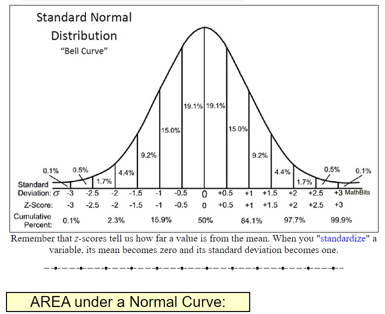
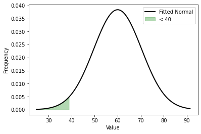
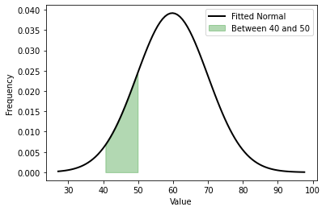
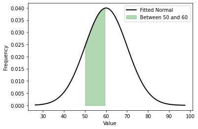
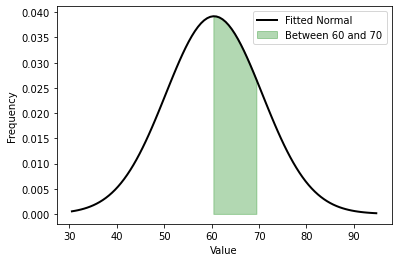
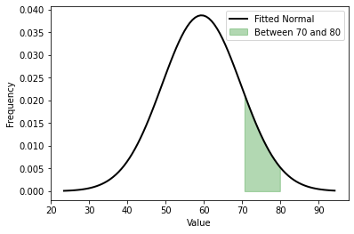
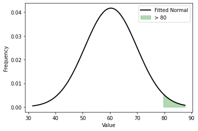

Week 6: Continuous Random Variables#
Normal Distribution#
This week you’ll be introduced to the concept of continuous random variable and study the properties of the Normal Distribution.
The normal distribution is often referred to as \(X \sim \mathcal{N}(\mu,\,\sigma^{2})\).
Thus when a random variable \(X\) is distributed normally with mean \((\mu)\) and variance \((\sigma^2)\), one may write
Reminder#
Shifting and scaling a distribution: see notes from week 2
Z-score
: A z-score (or standard score) represents the number of standard deviations a given value \(x\) falls from the mean, \(\mu\)
Understanding Z-scores:
: Here’s a good website, Z-score summary
Calculating Z-scores:
Normal distribution: : Where you can get values for the normal distribution
Here’s a good website: normal distribution
Statistical tables
Spreadsheets

Q15.
For this and subsequent questions you need to use values for the cumulative normal distribution which you can get from statistical tables ( e.g. the ones in Barrow) or from the web or a spreadsheet.
Marks on an exam \(x_i\) are distributed \(\mathcal{N}(60, 10^2 )\).
from scipy.stats import norm
# Generate random data from a normal distribution
mean = 60
std_dev = 10

# Python implemtation
P_X_40 = norm.cdf(40, mean, std_dev)
P_X_40
0.0227501319481792

# Python implemtation
P_X_50_40 = norm.cdf(50, mean, std_dev) - norm.cdf(40, mean, std_dev)
P_X_50_40
0.13590512198327787

# Python implemtation
P_X_60_50 = norm.cdf(60, mean, std_dev) - norm.cdf(50, mean, std_dev)
P_X_60_50
0.3413447460685429

# Python implemtation
P_X_70_60 = norm.cdf(70, mean, std_dev) - norm.cdf(60, mean, std_dev)
P_X_70_60
0.3413447460685429

# Python implemtation
P_X_80_70 = norm.cdf(80, mean, std_dev) - norm.cdf(70, mean, std_dev)
P_X_80_70
0.13590512198327787

# Python implemtation
P_X_80 = 1 - norm.cdf(80, mean, std_dev)
P_X_80
0.02275013194817921
# Python implementation
X_10 = norm.ppf(0.9, mean, std_dev)
X_10
72.815515655446
import numpy as np
import matplotlib.pyplot as plt
from scipy.stats import norm
# Generate random data from a normal distribution
mean = 60
std_dev = 10
data = np.random.normal(mean, std_dev, size=(15, 50))
# Flatten the data to a 1D array
data = data.flatten()
# Create a histogram
# plt.hist(data, bins=20, density=True, alpha=0.5, color='b', label='Histogram')
# Fit a normal distribution to the data
mu, std = norm.fit(data)
# Plot the PDF of the fitted normal distribution
xmin, xmax = min(data), max(data)
x = np.linspace(xmin, xmax, 100)
p = norm.pdf(x, mu, std)
plt.plot(x, p, 'k', linewidth=2, label='Fitted Normal')
# Plot the area one standard deviation above the mean
x_std_above = mu + 2*std
plt.fill_between(x, 0, p, where=(x > x_std_above), color='g', alpha=0.3, label='> 80')
# plt.title("Histogram, Fitted Normal Distribution, and 1 Std Dev Above Mean")
plt.xlabel("Value")
plt.ylabel("Frequency")
plt.legend()
plt.show()
import numpy as np
import matplotlib.pyplot as plt
from scipy.stats import norm
# Generate random data from a normal distribution
mean = 60
std_dev = 10
data = np.random.normal(mean, std_dev, size=(15, 50))
# Flatten the data to a 1D array
data = data.flatten()
# Create a histogram
# plt.hist(data, bins=20, density=True, alpha=0.5, color='b', label='Histogram')
# Fit a normal distribution to the data
mu, std = norm.fit(data)
# Plot the PDF of the fitted normal distribution
xmin, xmax = min(data), max(data)
x = np.linspace(xmin, xmax, 100)
p = norm.pdf(x, mu, std)
plt.plot(x, p, 'k', linewidth=2, label='Fitted Normal')
# Plot the area between 40 and 50
x_min = 50
x_max = 60
plt.fill_between(x, 0, p, where=(x >= x_min) & (x <= x_max), color='g', alpha=0.3, label='Between 50 and 60')
# plt.title("Histogram, Fitted Normal Distribution, and Area Between 40 and 50")
plt.xlabel("Value")
plt.ylabel("Frequency")
plt.legend()
plt.show()
norm.ppf(0.9, mu, std)
73.258737716292